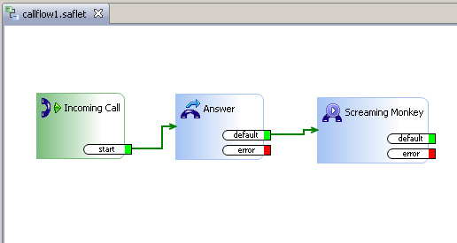

Saflet

Saflets are flow applications created by using SafiWorkshop
and ran using SafiServer. Currently, Saflets can be used to create call flow (or IVR) type applications for use with Asterisk PBXs; but in the future you will be able to use Saflets for creating any kind of application flow (i.e. data import, directory polling, process flows, etc).
SafiWorkshop comes with a "mini" version of
SafiServer for testing and debugging Saflets.